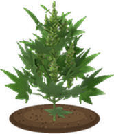
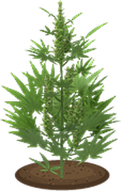
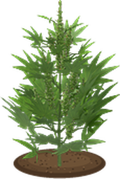
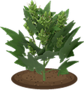
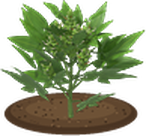
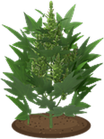
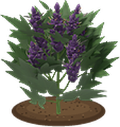
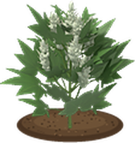
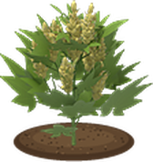
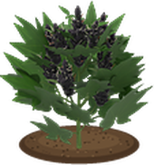

Seedling

Vegetative

Pre-flower

Flowering

Ripe
Every plant grows through five real stages. Miss the harvest window and quality slips.
Strains & Breeding
Six starter strains. Endless crosses. Seven shapes, five colours.

Indica
Melts stress away and flowers fast, but you'll want a nap and a snack.

Sativa
Kills boredom and lifts your mood. Slower to finish.

Hybrid
Anything in between. Its high mixes both, by how much indica it carries.
Knox Kush
Indica · flowers fast · Kush, green

Muldraugh Purple
Indica · fastest, strong · Afghan, purple

Rosewood Stone
Indica · big yields · Christmas Tree, dark
Riverside Haze
Sativa · strong · Haze, green

West Point Lightning
Sativa · strongest, slowest · Landrace, frosty
March Ridge Gold
Sativa · big yields · Hybrid, lime gold
Cross them and name the result
Pollinate a female with a maleRosewood Stone
March Ridge Gold

Louisville Shuffle
Four hidden traits. Indica share, potency, yield and flowering speed, mixed from both parents with a little luck.
Every cross gets a name. Kentucky towns, zombie slang and real strains like Sour Diesel or Bubba Kush. No two share one.
Keep the best seed. Breed for faster flowers, fatter yields or a harder hit.
Looks run in the family. Each seed takes its shape and its bud colour from one parent.
Shapes & colours
Looks only. Traits still do the work.
Landrace

Haze
Hybrid

Kush

Afghan

Autoflower

Christmas Tree

Green

Purple

Frosty White

Lime Gold

Dark
Every strain carries a body shape and a bud colour that show in flower. About 3 in 100 crossed seeds turn up a shape or colour neither parent had, so there are phenos to hunt. Autoflower only shows up that way.

Sexed seeds. About 1 seed in 10 is male: pollen sacs, no buds. Males pollinate for new seeds.
Keep her calm. A stressed female can go hermie and seed herself and the plants around her.

Purple buds. Cold nights in late flower turn buds purple, for +5% quality. Indicas most.
Light & Feeding
The sun works. Grow lights do it better.
Sunlight · ceiling 70


Basic lamps · 85


Pro lamps · 100
Every lamp lights a round zone and sets a ceiling on how good your buds can get. Lamps need power from the grid or a generator.


Nutrients
Veg food while growing, Bloom food while flowering. Feed twice in one stage and you burn her.

Topping
Snip the tip once in veg for more colas: +20% buds, for a little stress.

Strip fan leaves
In late veg and early flower, for better buds and leaves to keep. Overdo it and she suffers.

Light timers
18/6 keeps her growing bigger. Flip to 12/12 to start flowering.

Farm plot

Small bag

Large bag

XL mother bag

Drip tank
Fabric grow bags go indoors and keep their soil from one harvest to the next.
Cloning & Mothers
Found a keeper? Keep her forever.
Take a cutting
in veg or pre-flower, scissors or a knife

Dip in gel
+15% to root

Cloning dome
holds 12, keeps them moist, +15%

Rooted clone
same strain and sex, starts in veg
Rooting chance


XL mother pots
8 cuttings ready before she needs a rest, in an XL bag or XL DWC.
Clones barely drift, so a great strain lasts.
Feed half as often while she's held in veg.
Shakes off cutting stress while she waits.
Hydroponics
Ditch the dirt and scale up.

DWC Bucket
One plant, its own 15 L tank. The XL mother bucket holds 30 L.
Yield ×1.3 · Mistakes ×0.75 · Quality up to 100


Recirculating DWC
One control bucket feeds up to 6 sites within 3 tiles. The only way to grow Top Shelf.
Yield ×1.4 · Mistakes ×0.6 · Quality up to 115


Ebb & Flow
Flood tables on rockwool. Up to 12 sites on one 60 L reservoir, run by a flood timer.
Yield ×1.2 · Root rot ×0.25 · Power flood timer


Mind the reservoir. Pumps need power. A dead pump or stale water brings root rot, so top it up, change the water and treat it with bleach. With Dazed Plumbing, pipe in a water line and reservoirs refill themselves.
Grow Rooms
Seal a room. Run it from one panel.

Room Panel

Exhaust Fan

Intake Fan

Wall AC

Heater

Dehumidifier

Humidifier

Circulation Fan
Hang a Grow Room Panel in a room closed in by walls, doors and windows. Gear runs on Auto, or set each piece On or Off. Exhaust fans work best on an outside wall.
One dashboard for the whole room: name it, pick Veg, Flower or Drying mode, set one light schedule for every lamp, top up every reservoir at once, and see each plant's strain, stage and health at a glance.
Veg
50 to 65% humidity
Flower
40 to 50% humidity
Drying
55 to 62% humidity
Light leaks. Light through a bare door or window during the dark hours stresses flowering plants, and may turn one hermie. Hang a sheet over it.
Climate. Lit lamps add heat. Out of range means stress, and humid air can mold flowering buds. Temperatures follow Dazed Core's °C or °F.
Dry, Trim & Cure
Patience turns good weed into great weed.

Harvest
the whole wet plant


Hang to dry
about 48 h, a fan helps


Trim buds
scissors or a knife


Cure
6 days, burp it, up to +10%
A jar holds 30 buds, a barrel 300.
Watch for mold. Damp, hot rooms invite mold, and dry too long and buds suffer. Moldy buds are worth a fifth and smoking them only hurts.
Every bud gets a grade
Light, care, genetics, timing, drying and curing all add up. Better weed hits harder.
Fan leaves become blunt wraps
Strip or trim

Dry

Cure

Roll a blunt
Smoke It
The reward, with real consequences.


Joint
Rolling papers and a bud. Gentle, lasts about 2.5 hours.

Pipe
Pack a bud and light it. About 30% stronger.

Blunt
Two buds in a leaf wrap. Three sessions, relight it in between.
Indica relaxes and eases stress, but makes you hungry and tired.
Sativa lifts boredom and mood, and wakes you up.
Tolerance and habit. Each dose weakens the next. Regular use brings withdrawal.
Light up with a lighter, matches or an open flame · a High Tracker window shows your high live
Agriculture Skill
The more you farm, the more you can read.
Agriculture skill decides how much Inspect tells you, from rough stage at 0 to expected quality at 10.

Grower's Handbook
Grow bags (XL too), lamps, timers, racks, fans, jars and barrels.

Hydroponics Monthly
Every hydro build, XL DWC, clay pebbles and the flood timer.

Controlled Environment Quarterly
The room panel, fans, AC, climate gear and the drip tank.
Find seeds and gear in garden and hardware stores, farms, tobacco shops and drug labs. Tune it all with 22 sandbox options.